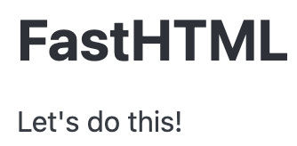

We import what we need for rapid development! A carefully-curated set of FastHTML functions and other Python objects is brought into our global namespace for convenience.
2
We instantiate a FastHTML app with the fast_app() utility function. This provides a number of really useful defaults that we’ll take advantage of later in the tutorial.
3
We use the rt() decorator to tell FastHTML what to return when a user visits / in their browser.
4
We connect this route to HTTP GET requests by defining a view function called get().
5
A tree of Python function calls that return all the HTML required to write a properly formed web page. You’ll soon see the power of this approach.
6
The serve() utility configures and runs FastHTML using a library called uvicorn.
Run the code:
python main.py
The terminal will look like this:
INFO: Uvicorn running on http://0.0.0.0:5001 (Press CTRL+C to quit)INFO: Started reloader process [58058] using WatchFilesINFO: Started server process [58060]INFO: Waiting for application startup.INFO: Application startup complete.
Confirm FastHTML is running by opening your web browser to 127.0.0.1:5001. You should see something like the image below:

Note
While some linters and developers will complain about the wildcard import, it is by design here and perfectly safe. FastHTML is very deliberate about the objects it exports in fasthtml.common. If it bothers you, you can import the objects you need individually, though it will make the code more verbose and less readable.
A Minimal Charting Application
The Script function allows you to include JavaScript. You can use Python to generate parts of your JS or JSON like this:
When we can’t figure out a bug in FastHTML, we can run it in DEBUG mode. When an error is thrown, the error screen is displayed in the browser. This error setting should never be used in a deployed app.
Python throws an error when it tries to divide an integer by zero.
Routing
FastHTML builds upon FastAPI’s friendly decorator pattern for specifying URLs, with extra features:
main.py
from fasthtml.fastapp import*app, rt = fast_app()1@rt("/")def get():return Titled("FastHTML", P("Let's do this!"))2@rt("/hello")def get():return Titled("Hello, world!")serve()
1
The “/” URL on line 5 is the home of a project. This would be accessed at 127.0.0.1:5001.
2
“/hello” URL on line 9 will be found by the project if the user visits 127.0.0.1:5001/hello.
Tip
It looks like get() is being defined twice, but that’s not the case. Each function decorated with rt is totally separate, and is injected into the router. We’re not calling them in the module’s namespace (locals()). Rather, we’re loading them into the routing mechanism using the rt decorator.
You can do more! Read on to learn what we can do to make parts of the URL dynamic.
Variables in URLs
You can add variable sections to a URL by marking them with {variable_name}. Your function then receives the {variable_name} as a keyword argument, but only if it is the correct type. Here’s an example:
main.py
from fasthtml.fastapp import*app, rt = fast_app()1@rt("/{name}/{age}")2def get(name: str, age: int):3return Titled(f"Hello {name.title()}, age {age}")serve()
1
We specify two variable names, name and age.
2
We define two function arguments named identically to the variables. You will note that we specify the Python types to be passed.
3
We use these functions in our project.
Try it out by going to this address: 127.0.0.1:5001/uma/5. You should get a page that says,
“Hello Uma, age 5”.
What happens if we enter incorrect data?
The 127.0.0.1:5001/uma/5 URL works because 5 is an integer. If we enter something that is not, such as 127.0.0.1:5001/uma/five, then FastHTML will return an error instead of a web page.
FastHTML URL routing supports more complex types
The two examples we provide here use Python’s built-in str and int types, but you can use your own types, including more complex ones such as those defined by libraries like attrs, pydantic, and even sqlmodel.
HTTP Methods
FastHTML matches function names to HTTP methods. So far the URL routes we’ve defined have been for HTTP GET methods, the most common method for web pages.
Form submissions often are sent as HTTP POST. When dealing with more dynamic web page designs, also known as Single Page Apps (SPA for short), the need can arise for other methods such as HTTP PUT and HTTP DELETE. The way FastHTML handles this is by changing the function name.
By setting default_hdrs to False, FastHTML will not include pico.min.css.
2
This will generate an HTML <link> tag for sourcing the css for Sakura.
3
If you want an inline styles, the Style() function will put the result into the HTML.
Check it out!
Other Static Media File Locations
As you saw, Script and Link are specific to the most common static media use cases in web apps: including JavaScript, CSS, and images. But it also works with videos and other static media files. The default behavior is to look for these files in the root directory - typically we don’t do anything special to include them.
FastHTML also allows us to define a route that uses FileResponse to serve the file at a specified path. This is useful for serving images, videos, and other media files from a different directory without having to change the paths of many files. So if we move the directory containing the media files, we only need to change the path in one place. In the example below, we call images from a directory called public.
from fasthtml.common import*hdrs = (MarkdownJS(), HighlightJS(langs=['python', 'javascript', 'html', 'css']), )app, rt = fast_app(hdrs=hdrs)content ="""Here are some _markdown_ elements.- This is a list item- This is another list item- And this is a third list item**Fenced code blocks work here.**"""@rt('/')def get(req):return Titled("Markdown rendering example", Div(content,cls="marked"))serve()
Defining new ft components
We can build our own ft components and combine them with other components. The simplest method is defining them as a function.
def hero(title, statement):return Div(H1(title),P(statement), cls="hero")# usage exampleMain( hero("Hello World", "This is a hero statement"))
<main> <div class="hero"> <h1>Hello World</h1> <p>This is a hero statement</p> </div></main>
Pass through components
For when we need to define a new component that allows zero-to-many components to be nested within them, we lean on Python’s *args and **kwargs mechanism. Useful for creating page layout controls.
def layout(*args, **kwargs):"""Dashboard layout for all our dashboard views"""return Main( H1("Dashboard"), Div(*args, **kwargs), cls="dashboard", )# usage examplelayout( Ul(*[Li(o) for o inrange(3)]), P("Some content", cls="description"),)
While functions are easy to read, for more complex components some might find it easier to use a dataclass.
from dataclasses import dataclass@dataclassclass Hero: title: str statement: strdef __ft__(self):""" The __ft__ method renders the dataclass at runtime."""return Div(H1(self.title),P(self.statement), cls="hero")# usage exampleMain( Hero("Hello World", "This is a hero statement"))
<main> <div class="hero"> <h1>Hello World</h1> <p>This is a hero statement</p> </div></main>
Testing views in notebooks
Because of the ASGI event loop it is currently impossible to run FastHTML inside a notebook. However, we can still test the output of our views. To do this, we leverage Starlette, an ASGI toolkit that FastHTML uses.
# First we instantiate our app, in this case we remove the# default headers to reduce the size of the output.app, rt = fast_app(default_hdrs=False)# Setting up the Starlette test clientfrom starlette.testclient import TestClientclient = TestClient(app)# Usage example@rt("/")def get():return Titled("FastHTML is awesome", P("The fastest way to create web apps in Python"))print(client.get("/").text)
<!doctype html></!doctype><html> <head> <title>FastHTML is awesome</title> </head> <body><main class="container"> <h1>FastHTML is awesome</h1> <p>The fastest way to create web apps in Python</p></main> </body></html>
Cookies
Using Starlette’s Response object, we can set cookies. In our example, we’ll create a timestamp cookie.
from starlette.responses import Responsefrom datetime import datetime@rt('/settimestamp')def get(request): now = datetime.now() res = Response(f'Set to {now}') res.set_cookie('timestamp', str(now))return resclient.get('/settime').text
'Set to 2024-07-27 08:46:31.732189'
Now let’s get it back using the Starlette’s Request object, passed as an argument into our view.
@rt('/gettimestamp')def get(request): res = Response(f'Get timestamp: {request.cookies.get("now")}')return resclient.get('/gettimestamp').text
For convenience and security, FastHTML has a mechanism for storing small amounts of data in the user’s browser. We can do this by adding a session argument to routes. FastHTML sessions are Python dictonaries, and we can leverage to our benefit. The example below shows how to concisely set and get sessions.
@rt('/adder/{num}')def get(session, num: int): session.setdefault('sum', 0) session['sum'] = session.get('sum') + numreturn Response(f'The sum is {session["sum"]}.')
Toasts (also known as Messages)
Toasts, sometimes called “Messages” are small notifications usually in colored boxes used to notify users that something has happened. Toasts can be of four types:
info
success
warning
error
Examples toasts might include:
“Payment accepted”
“Data submitted”
“Request approved”
Toasts take a little configuration plus views that use them require the session argument.
1setup_toasts(app)@rt('/toasting')2def get(session):# Normally one toast is enough, this allows us to see# different toast types in action. add_toast(session, f"Toast is being cooked", "info") add_toast(session, f"Toast is ready", "success") add_toast(session, f"Toast is getting a bit crispy", "warning") add_toast(session, f"Toast is burning!", "error")return Titled("I like toast")
1
setup_toasts is a helper function that adds toast dependencies. Usually this would be declared right after fast_app().
2
Toasts require sessions.
Authentication and authorization
In FastHTML the tasks of authentication and authorization are handled with Beforeware. Beforeware are functions that run before the route handler is called. They are useful for global tasks like ensuring users are authenticated or have permissions to access a view.
First, we write a function that accepts a request and session arguments:
# Status code 303 is a redirect that can change POST to GET,# so it's appropriate for a login page.login_redir = RedirectResponse('/login', status_code=303)def user_auth_before(req, sess):# The `auth` key in the request scope is automatically provided# to any handler which requests it, and can not be injected# by the user using query params, cookies, etc, so it should# be secure to use. auth = req.scope['auth'] = sess.get('auth', None)# If the session key is not there, it redirects to the login page.ifnot auth: return login_redir
Now we pass our user_auth_before function as the first argument into a Beforeware class. We also pass a list of regular expressions to the skip argument, designed to allow users to still get to the home and login pages.